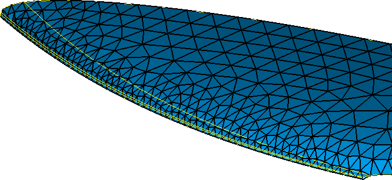

Content of this section:

 cfdmsh 4.0 documentation
cfdmsh 4.0 documentation cfdmsh 4.0 documentation


Content of this section:
File > New
Click on  in the toolbar
in the toolbar

[Ctrl] + [T] → Select the "cfdmsh.py" file on your computer
File > Import > BREP
Click on  in the 3D window toolbar
in the 3D window toolbar
Click on  in the 3D window toolbar
in the 3D window toolbar

Select "a380-stabilizer.brep_1" → New Entity > Explode →
Set "Sub-shapes Type" to "Face" → Apply and Close
Select "a380-stabilizer.brep_1" → Right-click > Show Only Children
Select the faces indicated in the following picture → Right-click > Show Only

Select the face indicated in the following picture → Right-click > Hide
Select all visible faces → Type in the Python console:
RebuildFace( dim = 1 )
or:
rf( dim = 1 )
Select all "RebuildFace (Edges)_*" shapes → Right-click > Show Only
Select all "RebuildFace (Edges)_*" shapes → Type in the Python console:
SetRandomColors( )
or:
src( )
Select the spline sets indicated in the following picture →
Type in the Python console:
FuseSplineSets( )
or:
fss( )
Select the spline sets which were fused (eg. like in the previous picture) → Right-click > Hide
Select the last resulting shape (eg. "FusedSplineSets_1") as well as the spline set indicated in yellow in the following picture →
Type in the Python console:
FuseSplineSets( )
or:
fss( )
FuseSplineSets( np = 200, tol = 1e-4 )
or:
fss( np = 200, tol = 1e-4 )
Select "FusedSplineSets_3" → Right-click > Show Only
New Entity > Basic > Point → Select the vertex visible in the following picture →
Apply and Close
Select both "FusedSplineSets_3" and "Vertex_1" together → Type in the Python console:
MakeFillingFromUnsortedEdges( )
or:
mffue( )
Select "a380-nose.brep_1" and "FillingFromUnstortedEdges_1" → Right-click > Show Only
Select "a380-nose.brep_1" and "FillingFromUnstortedEdges_1" → Right-click in the 3D window > Display Mode > Shading
Select "a380-nose.brep_1" and "FillingFromUnstortedEdges_1" → Type in the Python console:
SetRandomColors( )
or:
src( )

You can close this study.
cfdmsh 4.0 documentation
tougeron-cfd.com © 2016